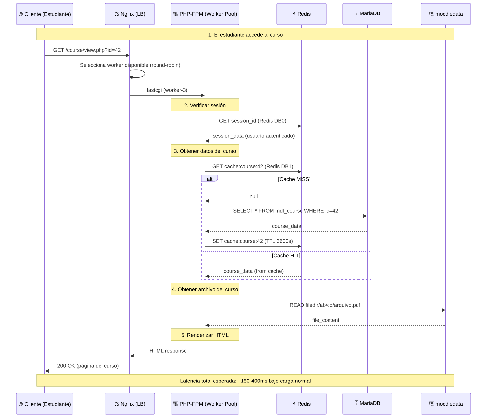

Moodle LMS — Arquitectura Reactiva Multi-Tenant · 8 diagramas en SVG, MMD y PUML
Actores del sistema (Estudiante, Profesor, Admin Global, Tenant Admin) e interacciones con Moodle LMS y servicios externos (Mailpit, LDAP).

Arquitectura Docker: Nginx → PHP-FPM (workers escalables) → Redis → MariaDB → moodledata. Base de todo el despliegue.

Módulos PHP de Moodle y su conexión al stack reactivo. Incluye las configuraciones clave del config.php (session_handler, cache_store, lock_factory).

Topología de red: frontend_net y backend_net, mapeo de puertos host→contenedor, volúmenes persistentes y dependencias entre servicios.

Comportamiento ante fallos: Redis caído → modo degradado + health checks; MariaDB caído → HTTP 503 + restart; Workers saturados → Nginx encola + HTTP 502; Disco lleno → modo solo lectura.

Aislamiento lógico de 3 instituciones (Universidad, Empresa, Colegio) dentro de una misma instancia Moodle: Categorías + Cohorts + Roles + Themes.

Flujo completo: desde que llega un nuevo cliente hasta que su tenant está operativo (~15 minutos). Admin Global configura, Tenant Admin opera autónomamente.

Secuencia temporal: Cliente → Nginx → PHP-FPM → Redis (sesión + caché con posible MISS) → MariaDB (solo si cache miss) → moodledata. Latencia esperada: 150-400ms.
